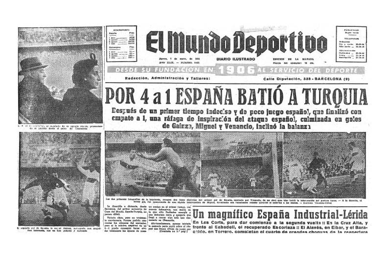

1 / 12
Monedas alusivas al Campeonato Mundial de Fútbol 1978
2 / 12
Revistas de los mundiales
3 / 12
Ticket de entrada a partido del Mundial España 1982
4 / 12
Ticket de entrada al partido de España contra Turquia en el Mundial España 1982
5 / 12

Revista española luego de derrotar a Turquia 4 a 1
6 / 12
Revista española anunciando que jugaran contra Inglaterra
7 / 12
Revista coleccionable de edición especial
8 / 12
Revistas con estampas de las selecciones clasificadas de distintos mundiales
9 / 12
Camiseta de Diego Armando Maradona que usó en la final del mundial de Mexico 1986
10 / 12
Ticket de entrada al partido final del mundial de Mexico 1986
11 / 12
La famosa "Muerte de pie" de Roberto Baggio luego de errar el ultimo penal en la final del mundial de USA 1994 contra Brasil
12 / 12
"Abrazo del alma" abrazo entre Ubaldo Matildo Fillol, Alberto Tarantini y Víctor Dell'Aquila.